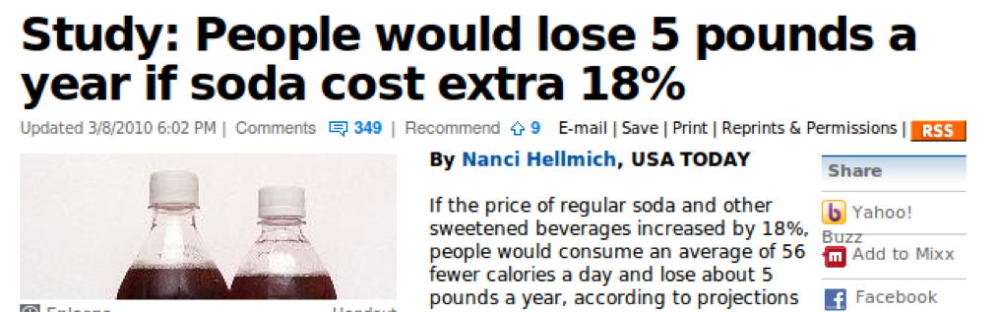
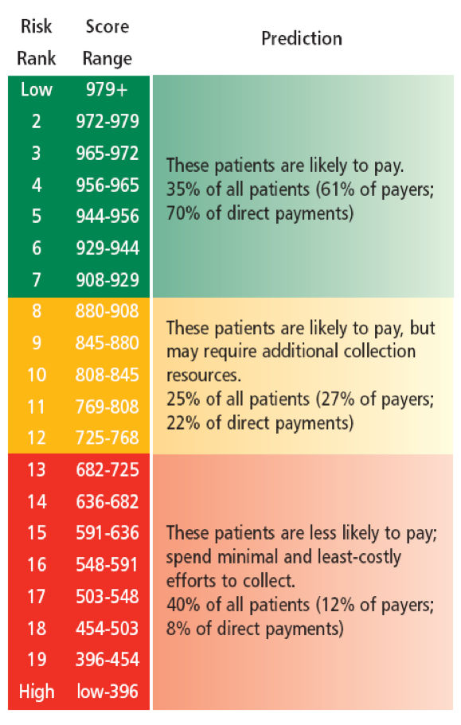
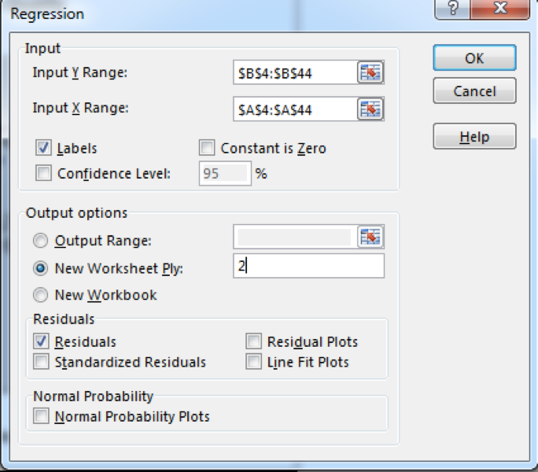
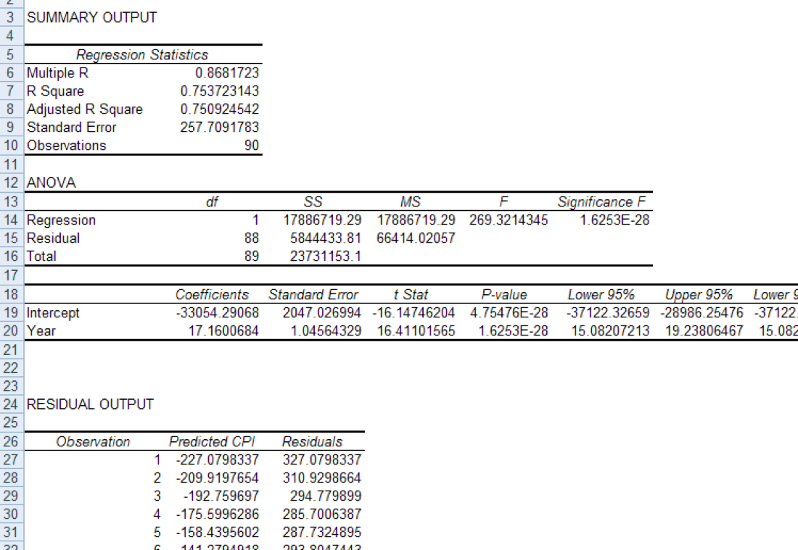
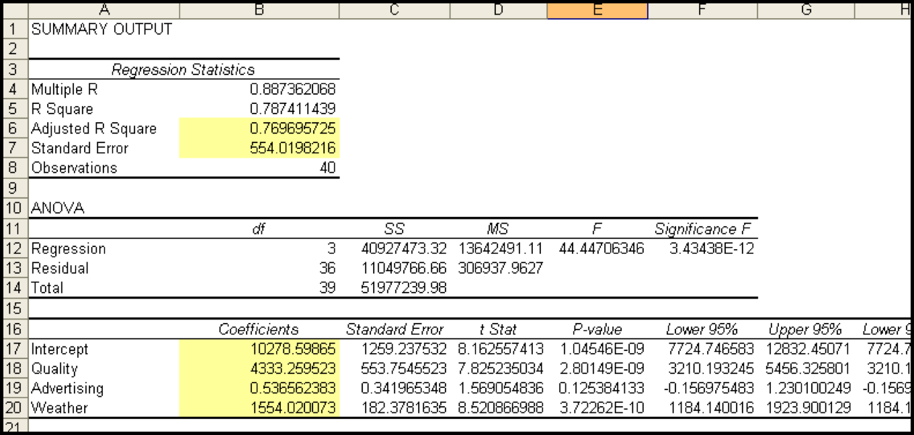

Regression (Basics)
Samuel Burer
August 2022
Introduction
Relationship Between Two Variables
Imagine a situation that simultaneously gives rise to two populations, each with its own underlying random variable (say, \(X\) and \(Y\)). I.e., \(X\) and \(Y\) can be measured together.
Examples
- \(X\) = fertilizer quantity per plant, \(Y\) = yield quantity per plant
- \(X\) = monthly income, \(Y\) = monthly entertainment expenses
- \(X\) = # of Toyotas per city, \(Y\) = # of Fords per city
- \(X\) = % favoring renewable energy, \(Y\) = % who recycle
Are \(X\) and \(Y\) related? If so, how?
- For example, are high values of \(X\) associated with high values of \(Y\)?
- Does \(Y\) increase as \(X\) decreases?
- Are they slightly, or strongly, related?
- Is there a formula that relates the two?
- Perhaps they’re not related at all?

- Is the (linear) relationship between \(X\) and \(Y\) positive or negative, weak or strong?
- Covariance and correlation
- Is there a (linear) formula that relates \(X\) and \(Y\)?
- Simple linear regression
Covariance and Correlation
What is a line?
See Excel file demo_1_line.xlsm
Covariance and Correlation
The covariance cov(\(X,Y\)) of \(X\) and \(Y\) is a measurement of the degree of association between \(X\) and \(Y\).
- cov(\(X,Y\)) > 0: a positive relationship
- cov(\(X,Y\)) < 0: a negative relationship
- cov(\(X,Y\)) = 0: neither positive nor negative
The correlation coefficient \(\rho_{XY}\) of \(X\) and \(Y\) is a scaled version of the covariance (between \(-1\) and \(+1\)).
\[ \rho_{XY} = \frac{ \text{cov}(X,Y) }{ \sigma_X \sigma_Y } \]
- \(\rho_{XY} = +1\): a perfect positive, linear relationship
- \(\rho_{XY} = -1\): a perfect negative, linear relationship
- \(\rho_{XY} = 0\): no linear relationship
The coefficient of determination between \(X\) and \(Y\) \(\rho_{XY}^2\), i.e., the square of the correlation coefficient:
- a number between 0 and 1
- \(\rho_{XY}^2 = 1\): a perfect linear relationship
- \(\rho_{XY}^2 = 0\): no linear relationship
Often interpreted as “the proportion of variation in \(Y\) explained by \(X\)” (and vice versa)
When you have sample data for \(X\) and \(Y\), the relevant Excel commands are
COVARCORREL- Tools > Data Analysis > Covariance
- Tools > Data Analysis > Correlation
See Excel file demo_2_correlation.xlsm
Keep in mind that, as with means and proportions, there are true values for cov(\(X,Y\)), \(\rho_{XY}\), and \(\rho_{XY}^2\) and then there are observed sample values.
“Beyond Options” BusinessWeek July 28, 2003
Companies with significant employee ownership do better on a wide range of performance metrics, including productivity, profit margins, and return on equity, according to the studies.

Source: Equifax
An Important Point
When describing the relationship between two variables, we focus on correlation, not causation.
Even though you may have in mind that one variable causes another, the statistical tools we use are not precise enough to detect this.
A nationwide study in the 1940s found a high correlation between polio and ice cream consumption. A careful re-examination of the data showed that the high values of both variables occurred in communities where data was collected in the summertime, and vice versa. We now know Polio spreads more easily when children gather in groups in relatively unsanitary conditions, i.e., it spreads more easily during summer vacation than when the children are in school.
Okay, so how do you determine causation?
- Reasonable explanation for cause and effect
- Connection happens under varying conditions
- Potential confounding variables are ruled out
- Only designed experiments show causation
Simple Linear Regression
See Excel file cpi_1.xlsx
Basic Steps of (Any) Regression
Specify a model, which gives a formula for Y in terms of X
- Y is called dependent, X is called independent
Fit the data to the model
- Excel does the number crunching
Evaluate whether the fit is “good” or not
- This is your judgment; we will do this later
If good, then use the fitted model to explain or forecast. If bad, then “back to the drawing board.”
Step 1: Linear Model
The simplest type of relationship that can exist between \(X\) and \(Y\) is a simple linear relationship:
\[ Y = \beta_0 + \beta_1*X \]
The number \(\beta_1\) is called the slope coefficient and is related to the correlation between \(X\) and \(Y\):
- \(\beta_1\) is the change in \(Y\) given a \(+1\) change in \(X\)
- \(\beta_1 > 0\): a positive relationship
- \(\beta_1\) < 0: a negative relationship
- \(\beta_1 = 0\): no relationship (i.e., independent)
The number \(\beta_0\) is called the intercept and represents the value of \(Y\) corresponding to \(X=0\).
If the relationship between \(X\) and \(Y\) is (exactly) linear and \(\beta_1 \ne 0\), then \(\rho_{XY}^2 = 1\), i.e., \(X\) and \(Y\) explain each other 100%.
However, in real applications, an exact linear relationship never holds. Instead, an “almost” linear relationship holds: \[ Y = \beta_0 + \beta_1*X + \epsilon \]
We think of \(\epsilon\) as an “error term” that accounts for anything that the linear part does not explain.
The Simple Linear Model: \(Y = \beta_0 + \beta_1*X + \epsilon\)
Ingredients: \(X, Y, \beta_0, \beta_1, \epsilon\)
Assumptions
- Discounting \(\epsilon\), \(X\) and \(Y\) have a linear relationship
- \(\beta_1 \ne 0\)
- \(\epsilon\) is a random variable that is normally distributed with mean \(\mu_\epsilon = 0\) and std dev \(\sigma_\epsilon\)
- \(\epsilon\) is independent of \(X\)
- \(\epsilon\) is “relatively small” compared to \(X\) and \(Y\)
Step 2: Fitting the Data
Suppose you have a data sample of \(n\) observations relating \(X\) and \(Y\).
Fitting the data to the model is done by a technique called the least squares method.
Tries to choose a line \(\bar Y = b_0 + b_1*X\) that minimizes the “total size” of the residuals.
Residuals are the difference between the sample data and the fitted line; also called errors
See Excel file demo_3_least_squares.xlsm.
| Model | Observed |
|---|---|
| \(Y = \beta_0 + \beta_1 X + \epsilon\) | \(\bar Y = b_0 + b_1 X\) |
| \(\beta_0\) | \(b_0\) |
| \(\beta_1\) | \(b_1\) |
| \(\mu_\epsilon\) | 0 |
| \(\sigma_\epsilon\) | \(S_{XY}\) |
| \(\rho_{XY}^2\) | \(R^2\) |
What does the fit give you?
\(R^2\) = percentage of variability in \(Y\) that is explained by \(X\) via the regression
\(S_{XY}\) = standard deviation of the residuals/errors
\(\bar{Y} = b_0 + b_1 X\) is “what we tell the boss”.
Excel calculates all of these things via Tools > Data Analysis > Regression:


Multiple Linear Regression
Multiple linear regression is an extension of simple linear regression in which the variable \(Y\) is described by \(m\) variables \(X_1, \ldots, X_m\)
Correlation Matrix
Before running a multiple regression, get a correlation matrix by running Tools > Data Analysis > Correlation on all columns in your data
- Shows pair-wise correlations
- Gives a sense of which \(X_i\) are most strongly correlated with \(Y\)
- Just exploring the data
Keep in mind that this is only a snapshot of the relationships in the data
- Will still want to do MLR
- MLR is a more powerful tool because it shows how all variables are related simultaneously
Multiple Linear Regression (cont’d)
A lot of similarites between MLR and SLR…
\[ Y = \beta_0 + \beta_1 X_1 + \cdots + \beta_m X_m + \epsilon \]
\[ \bar Y = b_0 + b_1 X_1 + \cdots + b_m X_m \]

The idea of best fit still applies
- errors/residuals
Intercept \(\beta_0\)/\(b_0\)
- the value of \(Y\) when all \(X_i\) are equal to 0 at the same time
Slopes \(\beta_i\)/\(b_i\)
change in \(Y\) given a \(+1\) change in \(X_i\)—while holding all other variables constant
95% CIs
\(R^2\) and \(S_{XY}\) have the same meaning
- However, it is better to look at Adjusted \(R^2\) because it is “unbiased”
